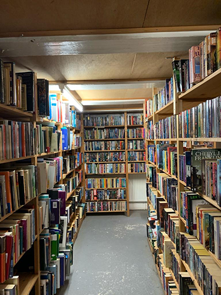

Home
Door Marie Janette Haspels geschreven
Benieuwd naar de unieke wereld van tweedehandse boeken? hou jij van het milieu te helpen en vind je boeken lezen geweldig alleen je vind het te duur. Blijf dan zeker scrollen op deze website. Hier vind je alle ins en outs over beste/leuke tweedehandse boekenwinkels in Amsterdam en ook de gratis boeken in Amsterdam ook wel de boekenhuisjes genoemd.
Interview
 InterviewBoekenhuisje
 boekenhuisje
boekenhuisje